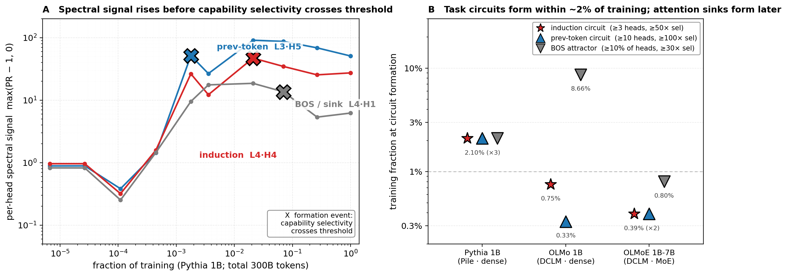
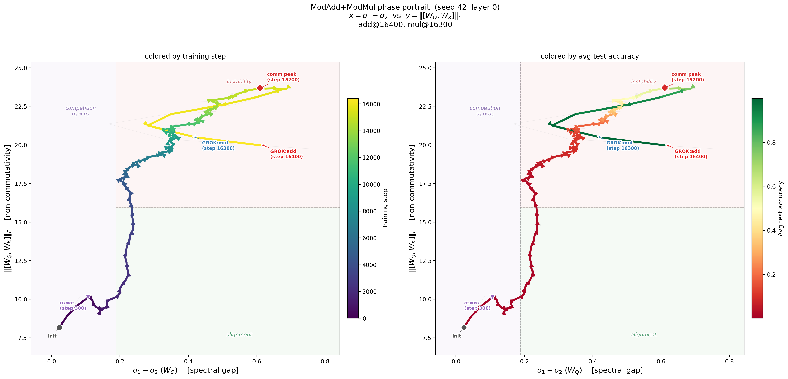
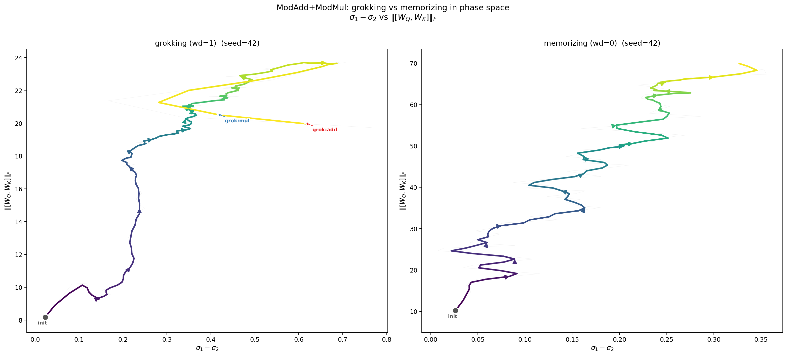

My work brings geometric and dynamical-systems methods to how neural networks learn. It started with toy models — using the commutator defect to find what predicts grokking — and the same geometry reappeared at scale: training trajectories concentrate along a dominant backbone direction, and the gap between that backbone and the bulk turns out to be a usable signal. That signal is now an unsupervised tool for identifying attention circuits during training. The work falls into three strands.
Mechanistic interpretability — spectral probe-circuits
An unsupervised, training-time signal that pre-identifies causally-relevant attention circuits without labels or ablation runs — turning mechanistic interpretability from a snapshot into a film. Validated across ~20× scale (51M to OLMoE 1B-7B), two architectures (dense and 64-expert MoE), and three pretraining datasets. Full narrative, figures, and developmental results at interpretability.html.

Capability Circuits Form Early — and the Signal Sees Them Coming
Left: the per-head spectral signal is elevated at or before each attention head’s formation event (Pythia 1B; induction, previous-token, BOS attractor). Right: induction and previous-token circuits form within 0.3–2% of training across three 1B-class models spanning two architectures and two datasets — circuit formation becomes a training-time observable rather than a post-hoc analysis.
A per-head spectral signal pre-identifies causally-relevant attention heads without labels or ablation; capability circuits are identifiable from 0.3–2% of training tokens, validated across an ~20× parameter scale range.
L0/L1 produce zero attention-sink heads at every checkpoint — an architectural floor; in DCLM models induction forms before the BOS attractor by 10–20× in tokens. Capability formation and attention-sink formation are two transitions, not one.
Four composed tasks × three 1B models: the screen-and-ablate recipe ports, but no two of the 12 (task, model) cells share the same primary causal circuit. Introduces a five-category screen-outcome taxonomy (primary cause, secondary cause, correlate, interferer, null).
A closure test separating load-bearing circuits from co-active-but-not-causal communities: passes in two dense 1B models, fails in the wrong direction in MoE — the informative boundary case.
Grokking — phase transitions in toy models
What predicts the memorization→generalization transition in modular arithmetic and other toy tasks, and the geometry of the trajectory through it.

Phase Portrait of Grokking
Left: Training trajectory in the (spectral gap, non-commutativity) plane, colored by training step. The system wanders in the competition zone (σ₁ ≈ σ₂) with near-zero accuracy, then the gap opens, non-commutativity peaks at step 15200, and the trajectory crosses into the alignment quadrant — at which point both grokking events occur (ModMul at step 16300, ModAdd at step 16400). Right: The same trajectory colored by test accuracy. Accuracy is essentially zero until the phase portrait dictates otherwise.

Grokking vs. Memorizing in Phase Space
Two runs, same architecture, same seed. With weight decay (left), the spectral gap opens and the system generalizes. Without weight decay (right), the gap never opens — the trajectory expands in the vertical direction but stays compressed along the spectral axis. The distinction between generalization and memorization is visible in the geometry of the training trajectory.
The commutator defect rises before grokking on SCAN and Dyck-1, accelerates grokking by 32–50% when amplified, and prevents it when suppressed — a causally implicated, architecture-agnostic early-warning signal.
Weight decay drives a phase diagram of multi-task grokking dynamics — staggered task ordering, universal trajectory integrability, holographic incompressibility, and transverse fragility — consistent with compression onto a superposition subspace.
Multi-task modular-arithmetic trajectories live in a 2–6 dimensional global subspace while individual weights remain full-rank: learned algorithms are globally low-rank in learning directions but locally full-rank in parameter space.
Bridges to Yuandong Tian’s Li2 grokking framework (arXiv:2509.21519): the σ2/σ3 eigengap on the rolling parameter-update Gram pinpoints Tian’s Stage III lock-in (fires at epoch 174 ± 1 in 15/15 grok seeds, 0/15 controls), with Theorem 6 sign-match saturating at the same epoch — mechanistic verification of when feature repulsion becomes dominant.
Per-task gradient SVD bridges Linear-Centroid features and spectral-edge optimizer dynamics with 100–330× coupling — 1–2 orders of magnitude stronger than the AdamW-update SVD used in prior work.
Each spectral-edge direction induces a structured function over the input domain — a single Fourier mode for modular addition, a discrete-log mode for multiplication, a multi-mode family for subtraction — invisible to standard interpretability tools.
At grokking, the spectral edge transitions from a gradient-driven functional axis to a weight-decay compression axis — flat under perturbation yet >4000× more ablation-critical than random directions.
Training dynamics at scale — the TinyStories / GPT2 backbone story
How optimization trajectories concentrate as models scale, from TinyStories-51M to GPT2-124M, and the optimizer-induced geometry behind it.
Transformer trajectories under AdamW concentrate along a “backbone” direction capturing 60–80% of displacement from initialization; the effect vanishes under SGD, identifying the structure as optimizer-induced rather than gradient-induced.
Scales spectral-edge analysis to GPT2-class transformer training (51M–124M parameters): the coherent/noise boundary follows a universal three-phase evolution and effective signal rank scales with task complexity.
Collaboration
I’m interested in how neural networks learn, and how they could learn better. I want the work to be useful. Everything I do comes out of that.
Collaborations are welcome — theoretical or empirical, on current questions or new ones. Visiting positions, joint research projects, or other engagements with researchers in mechanistic interpretability, alignment, or large-scale training all welcome.
I received my Ph.D. in Mathematics from Rutgers University, where I worked with Abbas Bahri in nonlinear PDE and contact geometry. I was subsequently a Courant Instructor at the Courant Institute of Mathematical Sciences (NYU) and a member of the Institute for Advanced Study. I later served as a Distinguished Research Fellow and Associate Professor at Shanghai Jiao Tong University.
Outside of work, I have been practicing meditation in the Nyingma tradition since sixteen. I enjoy hiking and cooking. I am a vegetarian.